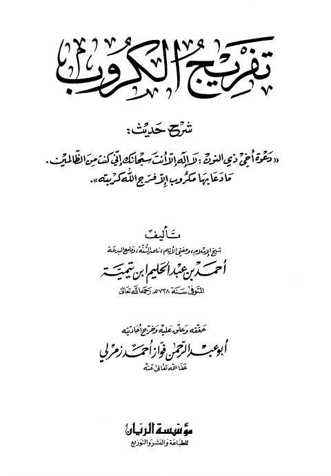

Downloads need an internet connection.
تفريج الكروب شرح حديث دعوة أخي ذي النون لا إله إلا أنت سبحانك إني كنت من الظالمين مادعا بها مكروب إلا فرج الله كربته
Authors: تقي الدين أحمد بن تيمية الحراني
Editors: فواز أحمد زمرلي
Publishers: مؤسسة الريان
▫️ العنوان: تفريج الكروب شرح حديث دعوة أخي ذي النون لا إله إلا أنت سبحانك إني كنت من الظالمين مادعا بها مكروب إلا فرج الله كربته ▪️ المؤلف: #تقي_الدين_أحمد_بن_عبد_الحليم_بن_تيمية ▫️ المحقق: #فواز_أحمد_زمرلي ▪️ الناشر: #مؤسسة_الريان ▫️ تاريخ النشر: 1418هـ 1997م ▪️ بلد النشر: بيروت، #لبنان ▫️ الطبعة: 1 ▪️ عدد الأجزاء: 1 ▫️ الصفحات: 184 ▪️ نوع الوعاء: #كتاب ▫️ التصنيف الرئيسي: #الحديث_وعلومه ۪